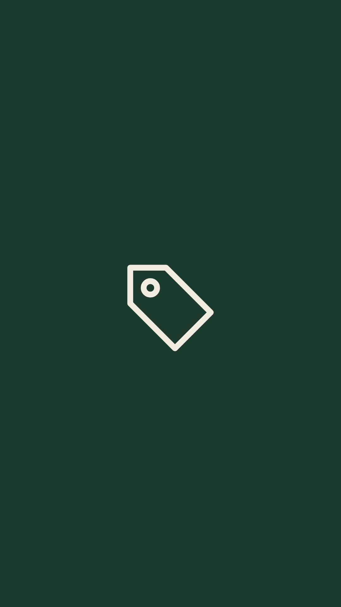
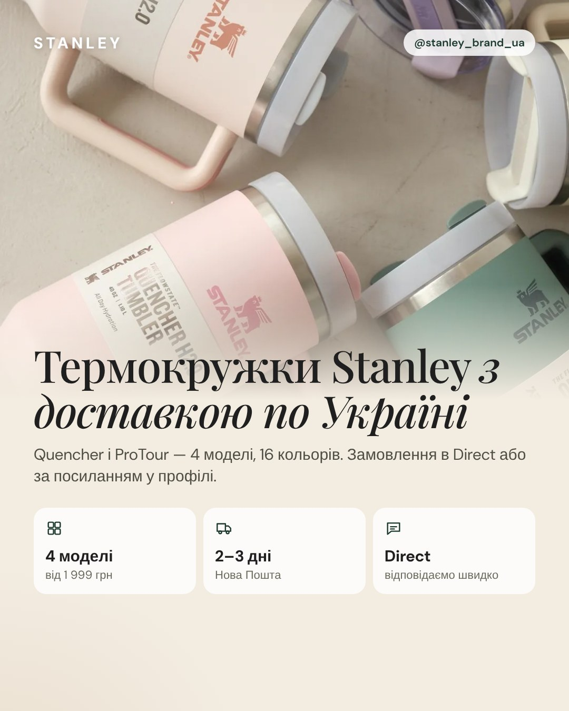
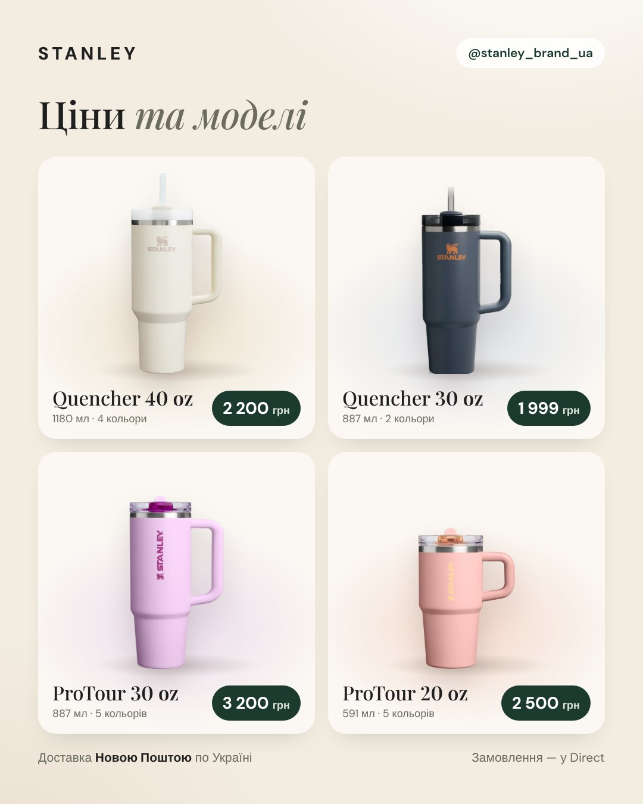
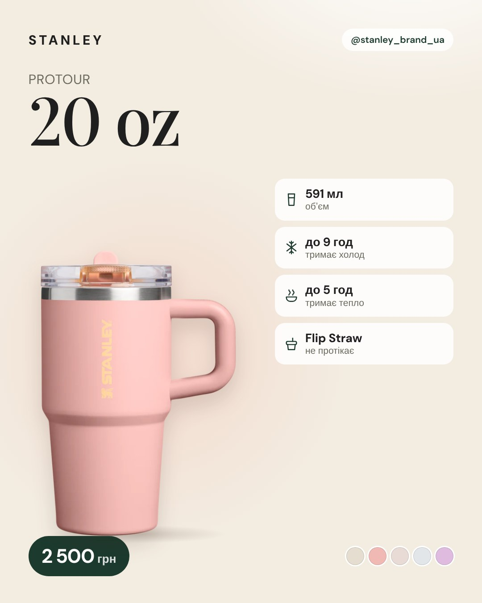
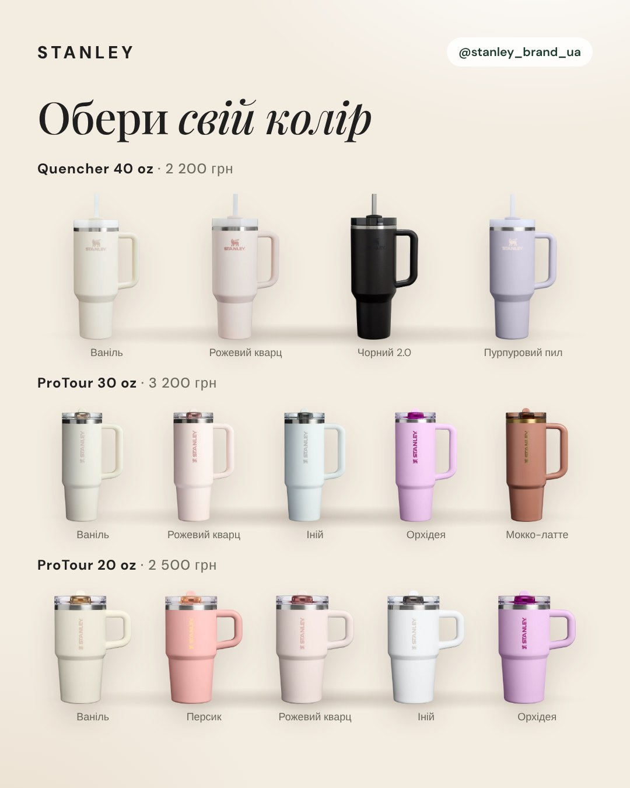
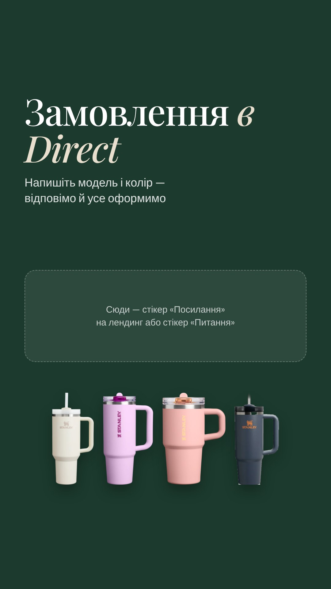

Усе, щоб оформити профіль і почати приймати замовлення: аватарка, 10 постів, 3 сторіс, 6 обкладинок «Актуального», тексти й відповіді для Direct. Ціни та характеристики — ті самі, що на лендингу.
Готово20 картинок із реальних фото, підписи до постів, шаблони відповідей, шаблон замовлення під бота ТТН.
Робите виЗавантажуєте в Instagram за кроками нижче — приблизно 40 хвилин з телефона.
Перевірте до публікаціїЦіни, умови доставки й оплати, наявність кольорів. Деталі — в останньому розділі.
Як зберегти картинку на телефон: натисніть і утримуйте її → «Зберегти зображення». Тексти копіюються кнопкою.
Шість кружечків під біо. Спочатку викладіть у сторіс те, що має бути всередині, потім: сторіс → «Додати в актуальне» → назва → «Редагувати обкладинку» → картинка нижче.

Ціни сторіс «Ціни сьогодні»Моделі пости 4–8 у сторісЗамовити пост «Як замовити» + сторіс «Direct»Доставка пост «Доставка та оплата»Оплата пост «Доставка та оплата»Відгуки лише справжні скріни від покупців
3
Пости
Новий пост стає першим у сітці, тому публікуйте з кінця: від 10 до 1. Тоді «Привіт» опиниться вгорі зліва. Після цього закріпіть три пости (⋯ → «Закріпити»): 1 «Привіт», 2 «Ціни», 9 «Як замовити».
Формат картинок 4:5 (1080×1350) — Instagram показує їх повністю, без обрізання.

1 · Привіт

2 · Ціни3 · Яку обрати4 · Quencher 40 oz5 · Quencher 30 oz6 · ProTour 30 oz

7 · ProTour 20 oz

8 · Кольори9 · Як замовити10 · Доставка та оплата
Підписи до постів
Хештеги вже в кінці кожного підпису. Їх небагато навмисно: 5–8 точних працюють краще за 30 випадкових.
Пост 1 · Привіт
Привіт! Це stanley_brand_ua — термокружки Stanley з доставкою по Україні.
У нас 4 моделі та 16 кольорів:
• Quencher 40 oz і 30 oz — класика з трубочкою
• ProTour 30 oz і 20 oz — відкидна трубочка, не протікає в сумці
Як замовити: напишіть у Direct модель і колір або оформіть за посиланням у профілі. Відправляємо Новою Поштою за 2–3 дні.
#stanley #stanleyquencher #stanleyprotour #термокружка #термочашка #stanleyukraine
Пост 2 · Ціни
Актуальні ціни:
Quencher 40 oz · 1180 мл — 2 200 грн
Quencher 30 oz · 887 мл — 1 999 грн
ProTour 30 oz · 887 мл — 3 200 грн
ProTour 20 oz · 591 мл — 2 500 грн
Безкоштовна доставка від 5 000 грн — тобто від двох кружок.
Не знаєте, яку обрати? Напишіть у Direct — підкажемо.
#stanley #stanleyquencher #stanleyprotour #термокружка #stanleyukraine
Пост 3 · Яку обрати
Яку Stanley обрати?
Quencher 40 oz — на весь день: 1180 мл, холод до 11 годин.
Quencher 30 oz — та сама класика, трохи компактніша: 887 мл.
ProTour 30 oz — кришка Flip Straw: натиснув — п'єш, закрив — не протікає навіть у сумці.
ProTour 20 oz — найкомпактніша, 591 мл, для авто й спортзалу.
Усі моделі — нержавіюча сталь 18/8, подвійні стінки, без BPA.
Напишіть, для чого берете кружку, — порадимо модель.
#stanley #stanleyquencher #stanleyprotour #термокружка #термочашка
Пост 4 · Quencher 40 oz
Stanley Quencher 40 oz — 2 200 грн
• 1180 мл — вистачає на весь день без доливу
• тримає холод до 11 годин, тепло до 7 годин, лід до 2 діб
• кришка FlowState з трьома позиціями і трубочка
• поміщається у підстаканник авто
Кольори: Ваніль, Рожевий кварц, Чорний 2.0, Пурпуровий пил.
Замовлення — у Direct.
#stanley #stanleyquencher #stanley40oz #термокружка #stanleyukraine
Пост 5 · Quencher 30 oz
Stanley Quencher 30 oz — 1 999 грн
• 887 мл
• тримає холод до 11 годин, тепло до 7 годин
• кришка FlowState і трубочка
• поміщається у підстаканник авто
Кольори: Графітовий, Темно-синій.
Замовлення — у Direct.
#stanley #stanleyquencher #stanley30oz #термокружка #stanleyukraine
Пост 6 · ProTour 30 oz
Stanley ProTour 30 oz — 3 200 грн
Кришка Flip Straw: натиснули кнопку — трубочка відкрилась, попили, закрили. Не протікає в будь-якому положенні, можна кидати в сумку.
• 887 мл
• тримає холод до 11 годин, тепло до 7 годин
• поміщається у підстаканник авто
Кольори: Ваніль, Рожевий кварц, Іній, Орхідея, Мокко-латте.
Замовлення — у Direct.
#stanley #stanleyprotour #термокружка #stanleyukraine #термочашка
Пост 7 · ProTour 20 oz
Stanley ProTour 20 oz — 2 500 грн
Компактна версія з кришкою Flip Straw — для авто, спортзалу й коротких поїздок. Не протікає в сумці.
• 591 мл
• тримає холод до 9 годин, тепло до 5 годин
• поміщається в будь-який підстаканник
Кольори: Ваніль, Персик, Рожевий кварц, Іній, Орхідея.
Замовлення — у Direct.
#stanley #stanleyprotour #термокружка #stanleyukraine #термочашка
Пост 8 · Кольори
Який колір ваш? Напишіть у коментарях.
Quencher 40 oz: Ваніль, Рожевий кварц, Чорний 2.0, Пурпуровий пил
ProTour 30 oz: Ваніль, Рожевий кварц, Іній, Орхідея, Мокко-латте
ProTour 20 oz: Ваніль, Персик, Рожевий кварц, Іній, Орхідея
Наявність кольору уточнюйте в Direct.
#stanley #stanleyquencher #stanleyprotour #термокружка #stanleyukraine
Пост 9 · Як замовити
Як замовити:
1. Напишіть нам у Direct модель і колір. Або оформіть самі за посиланням у профілі.
2. Надішліть ПІБ, телефон, місто й відділення або поштомат Нової Пошти.
3. Менеджер звʼяжеться, підтвердить замовлення й узгодить оплату. Відправляємо за 2–3 дні.
#stanley #термокружка #stanleyukraine
Пост 10 · Доставка та оплата
Доставка та оплата
Доставка — Новою Поштою по всій Україні: у відділення, поштомат або курʼєром. Відправка за 2–3 дні після підтвердження. Від 5 000 грн — безкоштовно.
Оплата:
• на карту — повна оплата
• накладений платіж — передплата 200 грн, решта при отриманні
Гарантія магазину — 6 місяців.
#stanley #термокружка #stanleyukraine
4
Сторіс
Верх і низ картинок залишено вільними під інтерфейс Instagram. На третю сторіс у пунктирну рамку додайте стікер «Посилання» (лендинг або Telegram) чи «Питання».
ProTour → в «Моделі»Ціни → в «Ціни»

Direct → в «Замовити»
5
Direct і замовлення
Тут відбуваються продажі. Налаштуйте дві речі, тоді відповідь на типове питання займатиме кілька секунд.
Швидкі відповіді
«Налаштування» → «Бізнес-інструменти» (або «Інструменти для авторів») → «Збережені відповіді» → «+». У полі «Ярлик» — слово з таблиці. У чаті набираєте ярлик — Instagram підставляє весь текст.
Ярлик: ціна
Вітаємо! Актуальні ціни:
Quencher 40 oz (1180 мл) — 2 200 грн
Quencher 30 oz (887 мл) — 1 999 грн
ProTour 30 oz (887 мл) — 3 200 грн
ProTour 20 oz (591 мл) — 2 500 грн
Яку модель і колір розглядаєте?
Ярлик: доставка
Відправляємо Новою Поштою по всій Україні — у відділення, поштомат або курʼєром, за 2–3 дні після підтвердження. Від 5 000 грн доставка безкоштовна.
Оплата: на карту або накладений платіж (передплата 200 грн, решта при отриманні).
Ярлик: замовлення
Щоб оформити, надішліть, будь ласка, одним повідомленням:
ПІБ:
Телефон:
Місто:
Відділення або поштомат НП:
Модель і колір:
Оплата: на карту чи накладений платіж
Ярлик: прийнято
Дякуємо, замовлення прийнято! Перевіримо наявність і напишемо вам сьогодні. Після відправки надішлемо номер ТТН.
Ярлик: ттн
Ваше замовлення відправлено! Номер ТТН: ______
Відстежити можна в застосунку Нова Пошта. Гарного дня!
Ярлик: відгук (через 2–3 дні після отримання)
Вітаємо! Як вам кружка? Будемо дуже вдячні за короткий відгук або фото — це допомагає іншим покупцям обрати.
Часті питання (кнопки при першому повідомленні)
«Бізнес-інструменти» → «Часті запитання» → додайте 4 питання й увімкніть автовідповіді (тексти — з ярликів вище).
4 питання
Скільки коштує?
Як замовити?
Доставка та оплата
Допоможіть обрати модель
Як замовлення з Direct перетворюється на ТТН
Клієнт надсилає дані за шаблоном «замовлення». Менеджер переписує їх у Telegram-групу з ботом у форматі нижче — бот покаже перевірку й створить ТТН Нової Пошти.
Формат для бота ТТН (приклад)
ПІБ: Іванова Олена
Тел: +380501234567
Місто: Київ
Відділення: 42
Сума: 2200
Опис: Quencher 40oz Ваніль
Для накладеного платежу додайте окремим рядком «Накладений». Перед першим справжнім замовленням надішліть боту цей приклад і переконайтеся, що він правильно визначив оплату.
Відповіді на питання, які потребують вашого рішення
Питання
Що відповідати
«Це оригінал?»
Напишіть одну чесну фразу про походження товару й тримайтеся її. Не обіцяйте того, що не зможете показати (документи, чеки постачальника).
«Є в наявності?»
Перевірте склад перед відповіддю. Якщо кольору немає — запропонуйте схожий або строк поставки.
«Можна повернути?»
Опишіть ваші умови обміну й повернення. Їх варто один раз записати й зберегти як швидку відповідь.
«Знижка на дві?»
Від 5 000 грн уже безкоштовна доставка. Будь-яку іншу знижку вирішуєте ви.
6
Перші 2 тижні
Готові пости роблять профіль зрозумілим. Нових людей приводять Reels: короткі вертикальні відео 7–15 секунд, зняті на телефон. Перша секунда має одразу показувати щось цікаве.
День
Що зробити
1
Профіль, 10 постів (від 10 до 1), 3 закріплені, «Актуальне», швидкі відповіді.
2
Reels: тест з льодом у Quencher. Насипали лід → «минуло 11 годин» → лід на місці. Знімайте чесно, після реальної перевірки.
3
Сторіс: опитування «Який колір обрали б?» з двома фото.
4
Reels: ProTour догори дном над раковиною — не протікає.
5
Reels: усі кольори в ряд, повільна панорама під трендовий звук.
6
Сторіс: пакуємо замовлення (без імен і адрес покупців).
7
Reels: Quencher 40 oz у підстаканнику авто.
8
Reels: розпаковка однієї кружки.
9
Сторіс: «Питання» — відповідайте наступного дня окремими сторіс.
10
Reels: «Скільки це — 1180 мл?» — переливаєте дві пляшки по 0,5 л і ще трохи.
11–14
Повторіть відео, які набрали найбільше переглядів, з іншим кольором або підписом. Перші справжні відгуки — в «Актуальне».
Під кожним Reels — коротка фраза й «Ціна та замовлення — у Direct».
7
Перевірити до публікації
Що взято з ваших матеріалів і потребує підтвердження. Ціни — з вашого прайсу. На основному сайті вони інші (40 oz — 2 500, 30 oz — 1 799, ProTour 30 — 3 300, ProTour 20 — 2 999). Доставка 2–3 дні, безкоштовно від 5 000 грн, оплата на карту або накладений з передплатою 200 грн, гарантія 6 місяців — з основного сайту.
Ціни однакові в Instagram, на лендингу й на основному сайті.
Умови доставки, оплати й гарантії актуальні.
Усі 16 кольорів є в наявності. Якщо ні — приберіть зайві з постів 4–8.
«Відгуки» в «Актуальному» — лише справжні скріни від покупців, з їхньої згоди.
Реквізити карти — тільки в особистих повідомленнях, ніколи в постах і сторіс.
Назва Stanley — торгова марка. В імені акаунта вона може викликати скаргу від правовласника. Якщо Instagram заблокує профіль, назва без «stanley» (наприклад, «thermo_cups_ua») безпечніша.
Instagram Shopping (мітки товарів на фото) в Україні може бути недоступний — джерела суперечать одне одному. Продажі через Direct і посилання в профілі працюють без нього. Перевірити можна в Meta Commerce Manager.